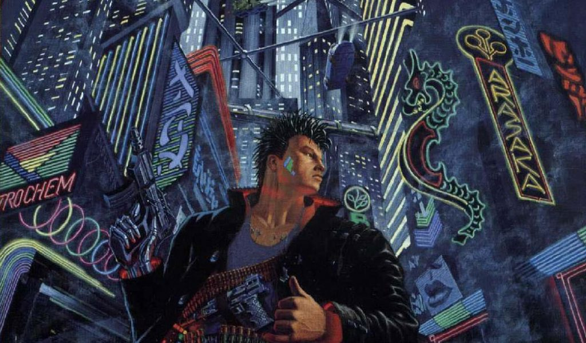
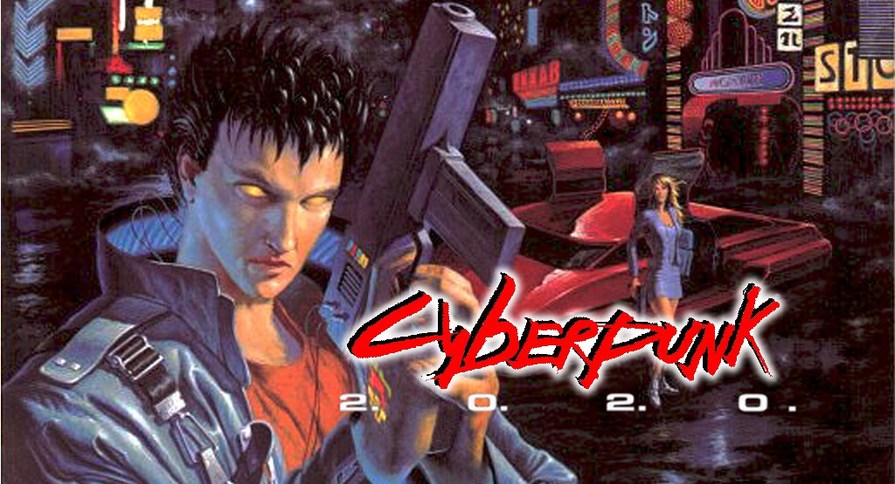
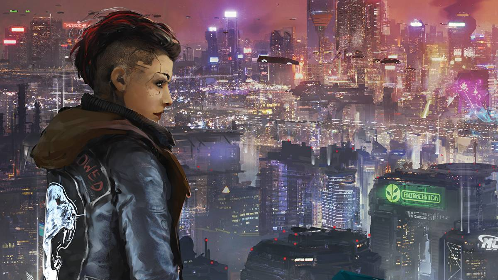
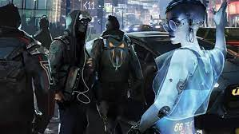

Cyberpunk 2020

The Corporations control the world from their skyscraper fortresses, enforcing their rule with armies of cyborg assassins. On the Street, Boostergangs roam a shattered urban wilderness, killing and looting. The rest of the world is a perpetual party, as fashion-model beautiful techies rub biosculpt jobs with battle armored roadwarriors in the hottest clubs, sleaziest bars and meanest streets this side of the Postholocaust. The Future never looked so bad.
But you can change it. You've got interface plugs in your wrists, weapons in your arms, lasers in your eyes, bio-chip programs screaming in your brain. You're wired in, cyberenhanced and solid state as you can take it to the fatal Edge where only the toughest and coolest can go. Because you're CYBERPUNK.
Cyberpunk: the original roleplaying game of the dark future; a world of corporate assassins, heavy-metal heroes and brain burning cyberhackers, packed with cutting edge technology and intense urban action. Within this book, you'll find everything you need to tackle the mean streets of the 2000's -- in a game system that combines the best in realistic action and playability.
Cyberpunk RED

The 4th Corporate War’s over and the big dogs have retreated to their corners to lick their wounds. That leaves everyone else to fend for themselves in a shattered world.
And that’s just fine. ‘cause you’ve got interface plugs in your wrists, metal in your limbs, and chips in your skull.

There’s a world full of opportunities out there. Maybe this time you can do more than save yourself. Maybe.
Cyberpunk RED is the latest edition of the classic roleplaying game of the Dark Future, featuring updated mechanics and new lore set in 2045, midway between the events of Cyberpunk 2020 and Cyberpunk 2077